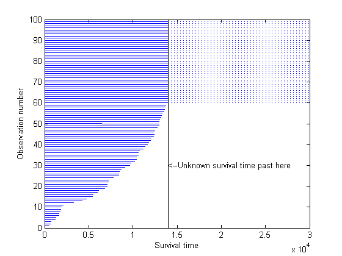
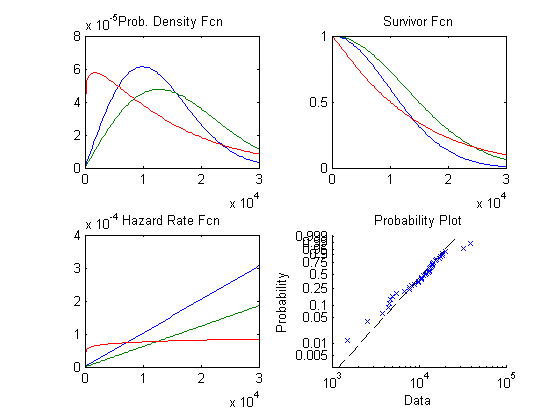
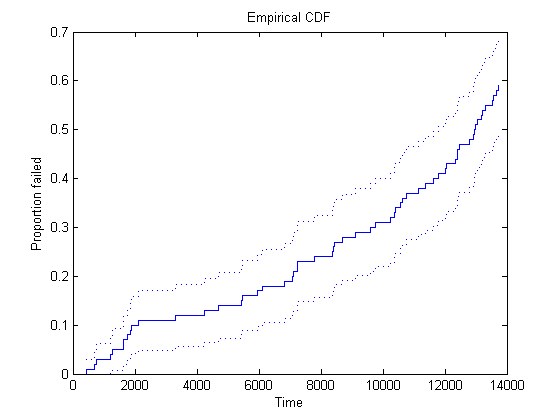
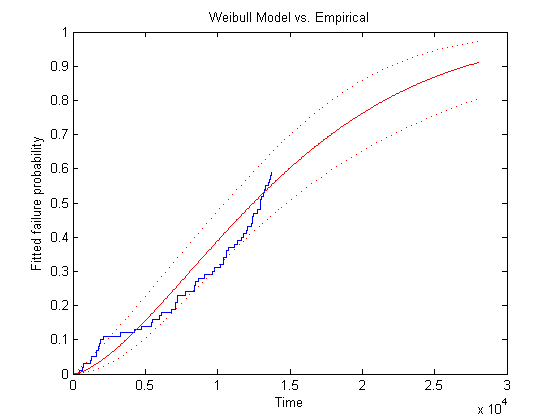
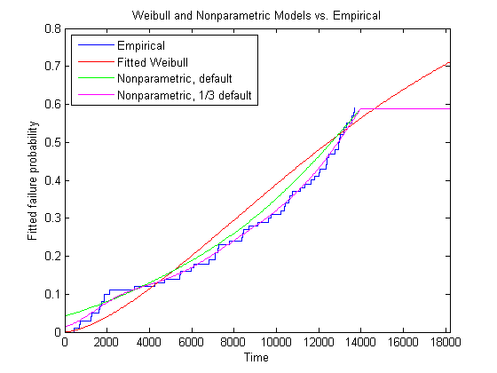
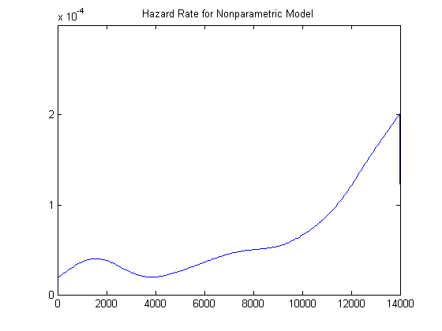

生存データまたは信頼性データの分析
このデモでは、寿命データの分析を検討します。生物学的応用または医学的応用では、この分析は生存分析として知られており、時間が、生物の生存時間、または病気が治癒するまでの時間を表すことがあります。工学的応用では、この分析は信頼性分析として知られており、時間が、装置の故障までの時間を表すことがあります。
MATLAB® と Statistics Toolbox™ を使用して寿命データを分析する方法を示すために、自動車の燃料噴射システムのスロットルが故障するまでの時間をモデル化する際の応用を調べます。
目次
寿命データの特徴
寿命データには、他のタイプのデータにはない、際立った特徴があります。第 1 に、寿命データの値は常に正であり、通常は時間を表します。第 2 に、寿命データの中には、正確に観測されず、一部の値よりも大きいことのみがわかるようなデータがあります。第 3 の特徴は、よく使用される分布と分析方法が寿命データに特化したものであるということです。
100 個のスロットルを故障するまでテストした結果のシミュレーションを実行してみましょう。ほとんどのスロットルは寿命がかなり長く、少数のスロットルは非常に早く故障する傾向があった場合に観測されるデータを生成します。
rand('state',1);
lifetime = [wblrnd(15000,3,90,1); wblrnd(1500,3,10,1)];
この例では、現場で実際に 100 時間使用した状況を各テスト時間で再現できるように、厳しい条件下でスロットルをテストすると仮定します。実践的な理由から、多くの場合、信頼性テストは一定の時間が経過すると停止されます。この例では、140 時間を採用します。これは、実際の稼働時間が 14,000 時間に達した状況に相当します。テスト中に故障するものもあれば、140 時間故障しないものもあります。実際のテストでは、後者の時間は 14,000 として記録されます。これを、シミュレートされたデータで再現します。また、故障時間を分類することもよく行われます。
T = 14000; obstime = sort(min(T, lifetime));
テストで故障しなかったスロットルもいずれは故障することはわかっていますが、実際の故障時間を観測できるほどテスト期間は長くありません。このテストから判断できるのは、それらのスロットルの寿命が 14,000 時間以上であることのみです。このような値を、打ち切られた値と呼びます。次のプロットは、データの約 40% が 14,000 で打ち切られていることを示しています。
failed = obstime(obstime<T); nfailed = length(failed); survived = obstime(obstime==T); nsurvived = length(survived); censored = (obstime >= T); plot([zeros(size(obstime)),obstime]', repmat(1:length(obstime),2,1), ... 'Color','b','LineStyle','-') line([T;3e4], repmat(nfailed+(1:nsurvived), 2, 1), 'Color','b','LineStyle',':'); line([T;T], [0;nfailed+nsurvived],'Color','k','LineStyle','-') text(T,30,'<--Unknown survival time past here') xlabel('Survival time'); ylabel('Observation number')
分布を調べる方法
データの分布を観察する前に、確率分布を調べるさまざまな方法を検討してみましょう。
- 確率密度関数 (PDF) は、さまざまな時間における故障の相対的確率を示します。
- 生存関数は生存の確率を時間の関数として与えますが、単に 1 から累積分布関数を引いたもの (1-CDF) にすぎません。
- ハザード率は、所定の時間までの生存が与えられている場合の瞬間故障率を与えます。これは、PDF を生存関数で除算したものです。この例では、ハザード率が上昇していることがわかります。これは、時間が経過するにつれて故障しやすくなること (経年劣化) を意味しています。
- 確率プロットは再スケーリングされた CDFであり、データを近似分布と比較するために使用します。
ワイブル分布を使用した、これら 4 つのプロット タイプの例を以下に示しています。ワイブル分布は、寿命データのモデル化によく使用されています。
x = linspace(1,30000); subplot(2,2,1); plot(x,wblpdf(x,14000,2),x,wblpdf(x,18000,2),x,wblpdf(x,14000,1.1)) title('Prob. Density Fcn') subplot(2,2,2); plot(x,1-wblcdf(x,14000,2),x,1-wblcdf(x,18000,2),x,1-wblcdf(x,14000,1.1)) title('Survivor Fcn') subplot(2,2,3); wblhaz = @(x,a,b) (wblpdf(x,a,b) ./ (1-wblcdf(x,a,b))); plot(x,wblhaz(x,14000,2),x,wblhaz(x,18000,2),x,wblhaz(x,14000,1.1)) title('Hazard Rate Fcn') subplot(2,2,4); probplot('weibull',wblrnd(14000,2,40,1)) title('Probability Plot')
ワイブル分布の近似
ワイブル分布は、指数分布を一般化したものです。寿命が指数分布に従う場合、寿命のハザード率は一定です。これは、寿命が経年変化しないことを意味します。つまり、ある区間において故障が観測される確率は、その区間の開始までの生存が与えられていれば、区間がどこで始まろうが関係ない、ということを意味します。ワイブル分布では、ハザード率が増減することがあります。
寿命データのモデル化に使用される他の分布として、対数正規分布、ガンマ分布、および Birnbaum-Saunders 分布が挙げられます。
可能な各生存時間までに故障する割合を示す、データの経験累積分布関数をプロットします。点線の曲線によって、これらの確率の 95% 信頼区間が与えられます。
subplot(1,1,1) ; [empF,x,empFlo,empFup] = ecdf(obstime,'censoring',censored); stairs(x,empF); hold on; stairs(x,empFlo,':'); stairs(x,empFup,':'); hold off xlabel('Time'); ylabel('Proportion failed'); title('Empirical CDF')
このプロットからわかるように、たとえば、4,000 時間までに故障する割合は約 12% であり、この時間までの故障確率の 95% 信頼限界は 6% ～ 18% です。テストは 14,000 時間しか実施されていないため、経験累積分布関数を使用して計算できるのは、その限度までの故障確率にすぎません。データの約 40% が 14,000 で打ち切られているため、経験累積分布関数は、1.0 ではなく約 0.60 まで上がるだけです。
ワイブル分布は通常、装置故障に適したモデルです。関数 wblfit は、ワイブル分布をデータ (打ち切りを伴うデータを含む) に近似させます。パラメーター推定を計算した後、それらの推定を使用して近似ワイブル分布の累積分布関数を評価します。累積分布関数の値は推定されたパラメーターに基づくため、それらの信頼限界を計算します。
paramEsts = wblfit(obstime,'censoring',censored);
[nlogl,paramCov] = wbllike(paramEsts,obstime,censored);
xx = linspace(1,2*T,500);
[wblF,wblFlo,wblFup] = wblcdf(xx,paramEsts(1),paramEsts(2),paramCov);
経験累積分布関数と近似累積分布関数のプロットを重ね合わせることができます。こうすることで、スロットルの信頼性データがワイブル分布によって、どの程度適切にモデル化されるかを判断できます。
stairs(x,empF); hold on handles = plot(xx,wblF,'r-',xx,wblFlo,'r:',xx,wblFup,'r:'); hold off xlabel('Time'); ylabel('Fitted failure probability'); title('Weibull Model vs. Empirical')
ワイブルモデルを使用すると、テストが終了した後の時間における故障確率を予想し、計算することができます。しかし、近似曲線がデータと十分に一致しないように思われます。2,000 時間より前の初期故障が、ワイブル モデルで予想されるよりもはるかに多く、その結果、約 7,000 ～ 約 13,000 時間における初期故障が非常に少なくなっています。これは驚くことではありません。この種の動作を伴うデータを生成したことを思い出してください。
平滑なノンパラメトリック推定の追加
Statistics Toolbox に用意されている事前定義の関数には、このような過剰な初期故障がある分布は含まれていません。その代わり、関数 ksdensity を使用して、経験累積分布関数を介した平滑なノンパラメトリック曲線を描画することができます。ワイブル累積分布関数の信頼帯を取り除き、2 つの曲線を追加します。一方の曲線は既定の平滑化パラメーターを使用したもので、他方の曲線は既定値の 1/3 の平滑化パラメーターを使用したものです。平滑化パラメーターが小さいほど、曲線がより密接にデータに追従します。
delete(handles(2:end)) [npF,ignore,u] = ksdensity(obstime,xx,'cens',censored,'function','cdf'); line(xx,npF,'Color','g'); npF3 = ksdensity(obstime,xx,'cens',censored,'function','cdf','width',u/3); line(xx,npF3,'Color','m'); xlim([0 1.3*T]) title('Weibull and Nonparametric Models vs. Empirical') legend('Empirical','Fitted Weibull','Nonparametric, default','Nonparametric, 1/3 default', ... 'location','northwest');
より小さい平滑化パラメーターを使用したノンパラメトリック推定は、十分にデータと一致します。しかし、経験累分布関数と同様に、テストが終了した後にノンパラメトリック モデルを外挿することは不可能です。つまり、推定された累積分布関数が、最後の観測の後は平坦になります。
このノンパラメトリック近似のハザード率を計算し、データの範囲全体にわたってプロットしてみましょう。
hazrate = ksdensity(obstime,xx,'cens',censored,'width',u/3) ./ (1-npF3); plot(xx,hazrate) title('Hazard Rate for Nonparametric Model') xlim([0 T])
この曲線は "バスタブ" のような形状をしており、ハザード率が 2,000 付近で高く、その後、低い値になり、次に再び上昇しています。これは、寿命の早期に故障しやすく (初期故障)、寿命の後期に再び故障しやすい (経年劣化) コンポーネントに典型的なハザード率です。
また、ノンパラメトリック モデルにおける打ち切られていない最大の観測を超えてハザード率を推定することはできず、グラフがゼロまで下がることに注意してください。
代替モデル
この例で使用した、シミュレートされたデータの場合、ワイブル分布は適切な近似ではないことがわかりました。ノンパラメトリック近似を使用すると、十分にデータを近似できましたが、そのモデルは、そのデータの範囲内でのみ役に立ちました。
代替方法は、異なるパラメトリック分布を使用するというものです。Statistics Toolbox には、対数正規分布、ガンマ分布、Birnbaum-Saunders 分布といった他の一般的な寿命分布向けの関数と、寿命モデルではあまり使用されない他の分布向けの関数が含まれています。また、Cカスタム一変量分布の近似 (第 2 部) のデモで説明されているように、カスタム パラメトリック モデルを定義して、寿命データに近似させることもできます。
さらに別の方法は、2 つのパラメトリック分布 (一方は初期故障を表し、他方は残りの分布を表す) を組み合わせて使用するというものです。この組み合わせの近似は、カスタム一変量分布の近似 のデモに記載されています。